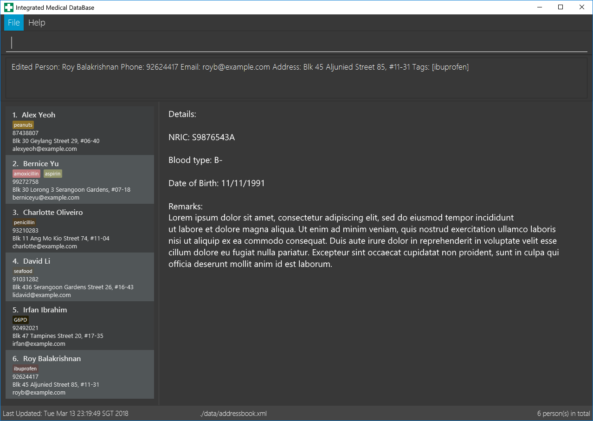

By: Team W15-B2 Since: March 2018 Licence: MIT
1. Introduction
Integrated Medical DataBase (IMDB) is an application for the management of health records digitally. Of note is the fact that IMDB is optimized for those who prefer to work with a Command Line Interface (CLI) while still having the benefits of a Graphical User Interface (GUI). This makes it perfect for doctors or staff who can type faster than they can navigate with a mouse. If your clinic has medical staff who can type fast, IMDB can get your patient management tasks done faster than traditional pen and paper or even normal GUI apps. Head to Section 2, “Quick Start” to get started.
2. Quick Start
-
Ensure you have Java version
1.8.0_60or later installed in your Computer.Having any Java 8 version is not enough.
This app will not work with earlier versions of Java 8. -
Download the latest
imdb.jarhere. -
Copy the file to the folder you want to use as the home folder for IMDB.
-
Double-click the file to start the app. The GUI should appear in a few seconds as shown in the figure below.
Figure 1: IMDB in action -
Type the command in the command box and press Enter to execute it.
e.g. typinghelpand pressing Enter will open the help window. -
Try out the commands below to get a feel of the app:
-
login: Launches the login GUI. Enter "bob" for username and "password456" for password. This will log you into the IMDB as Bob. Note that some commands will not work unless you are logged in. -
list: lists all patients -
addn/John Doe ic/S1234567A p/98765432 e/johnd@example.com a/John street, block 123, #01-01 dob/11/11/1991 b/B+: adds a patient namedJohn Doeto the IMDB. -
delete3: deletes the 3rd patient shown in the current list -
exit: exits the app
-
-
Refer to Section 3, “Features” for details of each command.
3. Features
Command Format
-
Words in
UPPER_CASEare the parameters to be supplied by the user e.g. inadd n/NAME,NAMEis a parameter which can be used asadd n/John Doe. -
Items in square brackets are optional e.g
n/NAME [c/CONDITION]can be used asn/John Doe c/peanutsor asn/John Doe. -
Items with
… after them can be used multiple times including zero times e.g.[c/CONDITION]…can be used asc/peanuts,c/G6PD c/aspirinetc. -
Parameters can be in any order e.g. if the command specifies
n/NAME p/PHONE_NUMBER,p/PHONE_NUMBER n/NAMEis also acceptable.
3.1. General Commands
The commands listed in this section are general commands that do not pertain to any specific functionality of IMDB.
3.1.1. Viewing help : help or h
Format: help or h
3.1.2. Logging into the system: login or lg [since v1.2]
Opens a window for the user to log into the IMDB with a matching username and password.
Format: login or lg
Examples:
-
login
Username: alice
Password: password123
This logs the user in as alice, who is a doctor. -
login
Username: bob
Password: password456
This logs the user in as bob, who is a medical staff.
3.1.3. Listing entered commands : history or hi
Lists all the commands that you have entered in reverse chronological order.
Format: history or hi
|
Pressing the ↑ and ↓ arrows will display the previous and next input respectively in the command box. |
3.1.4. Undoing previous command : undo or u or z
Restores the IMDB to the state before the previous undoable command was executed.
Format: undo or u
|
Undoable commands: those commands that modify the IMDB’s content ( |
Examples:
-
delete 1
list
undo(reverses thedelete 1command) -
select 1
list
u
Theundocommand fails as there are no undoable commands executed previously. -
delete 1
clear
undo(reverses theclearcommand)
undo(reverses thedelete 1command)
3.1.5. Redoing the previously undone command : redo or r or y
Reverses the most recent undo command.
Format: redo or r
Examples:
-
delete 1
undo(reverses thedelete 1command)
redo(reapplies thedelete 1command) -
delete 1
redo
Theredocommand fails as there are noundocommands executed previously. -
delete 1
clear
undo(reverses theclearcommand)
undo(reverses thedelete 1command)
r(reapplies thedelete 1command)
r(reapplies theclearcommand)
3.1.6. Clearing all entries : clear or c
Clears all entries from the IMDB.
Format: clear or c
3.1.7. Exiting the program : exit or x
Exits the program. This also logs the user out of the IMDB.
Format: exit or x
3.1.8. Encrypting data files [coming in v2.0]
Data encryption will be implemented in v2.0 to improve security and ensure confidentiality of patients' information.
3.1.9. Centralising the database [coming in v2.0]
IMDB will be able to switch from standalone mode to server/client mode in v2.0 to centralise the database at the server in the main branch.
3.1.10. Searching for drug information from a drug information website [coming in v2.0]
IMDB will be able to search for relevant drug information from an official website so that doctors will not administer the wrong drug.
3.1.11. Adding doctor and medical staff accounts [coming in v2.0]
There will be an administrator role which can add a new username and password to the IMDB, which will allow a new doctor or medical staff to log into the system.
3.2. Patient Commands
The commands listed in this section are commands for managing a patient’s details and records.
3.2.1. Adding a patient: add or a
Adds a patient to the IMDB
Format: add n/NAME ic/NRIC p/PHONE_NUMBER e/EMAIL a/ADDRESS dob/DOB b/BLOOD TYPE [c/CONDITION]… or
a n/NAME ic/NRIC p/PHONE_NUMBER e/EMAIL a/ADDRESS dob/DOB b/BLOOD TYPE [c/CONDITION]…
| A patient can have any number of conditions (including 0) |
Examples:
-
add n/John Doe ic/S1234567A p/98765432 e/johnd@example.com a/John street, block 123, #01-01, dob/01/01/1991 b/A- -
a n/Betsy Crowe ic/NRIC c/peanuts e/betsycrowe@example.com a/Newgate Prison p/1234567 dob/12/12/1992 b/B+ c/aspirin
3.2.2. Deleting a patient : delete or d or rm
Deletes the specified patient from the IMDB.
Format: delete INDEX or d
Examples:
-
list
delete 2
Deletes the 2nd patient in the IMDB. -
find Betsy
d 1
Deletes the 1st patient in the results of thefindcommand.
3.2.3. Editing a patient : edit or e
Edits an existing patient in the IMDB.
Format: edit INDEX [n/NAME] [ic/NRIC] [p/PHONE] [e/EMAIL] [a/ADDRESS] [dob/DOB] [b/BLOOD TYPE][c/CONDITION]… or
e INDEX [n/NAME] [ic/NRIC] [p/PHONE] [e/EMAIL] [a/ADDRESS] [dob/DOB] [b/BLOOD TYPE] [c/CONDITION]…
Examples:
-
edit 1 p/91234567 e/johndoe@example.com
Edits the phone number and email address of the 1st patient to be91234567andjohndoe@example.comrespectively. -
e 2 n/Betsy Crower c/
Edits the name of the 2nd patient to beBetsy Crowerand clears all existing conditions.
3.2.4. Editing remarks for a patient : remark or rk [since v1.2]
Edits the remark for a patient specified by the index number used in the last patient listing.
Format: remark INDEX r/[REMARK] or rk INDEX r/[REMARK]
Examples:
-
list
remark 1 r/Likes to drink coffee.
Edits the remark for the first patient to Likes to drink coffee. -
find Betsy
remark 1 r/
Removes the remark for the first patient.
3.2.5. Adding a condition to an existing patient: addc [since v1.3]
Adds a medical condition to an existing patient.
Format: addc or ac
Examples:
-
addc 1 c/aspirin
aspirinwill be added to the list of conditions that the patient at index1has. -
ac 2 c/asthma
asthmawill be added to the list of conditions that the patient at index2has.
3.2.6. Removing the condition of an existing patient: delc [since v1.4]
Removes a medical condition to an existing patient.
Format: delc or dc
Examples:
-
delc 1 c/aspirin
aspirinwill be removed from the list of conditions that the patient at index1has. -
dc 2 c/asthma
asthmawill be removed from the list of conditions that the patient at index2has.
3.2.7. Listing all patients : list or ls
Shows a list of all patients in the IMDB.
Format: list or ls
3.2.8. Locating patients by name: find or f
Finds patients whose names contain any of the given keywords.
Format: find KEYWORD [MORE_KEYWORDS] or f KEYWORD [MORE_KEYWORDS]
Examples:
-
find John
ReturnsjohnandJohn Doe -
f Betsy Tim John
Returns any patient having namesBetsy,Tim, orJohn
3.2.9. Selecting a patient : select or s
Selects the patient identified by the index number used in the last patient listing.
Format: select INDEX or s INDEX
Examples:
-
list
select 2
Selects the 2nd patient in the IMDB. -
find Betsy
s 1
Selects the 1st patient in the results of thefindcommand.
3.2.10. Viewing and editing the medical records for a patient : record [since in v1.4]
Views all the medical records for a patient specified by the index number used in the last patient listing.
This command is only accessible to doctors.
Format: record INDEX in/[RECORD INDEX] or rec INDEX in/[RECORD INDEX]
Examples:
-
list
record 1 in/1
Displays the first medical record for the first person in the result of the list command.
3.2.11. Deleting the medical records for a patient : remover [since in v1.4]
Deletes the medical record specified by the record index for a patient specified by the index number used in the last patient listing.
Format: remover INDEX in/[RECORD INDEX] or rr INDEX in/[RECORD INDEX]
Examples:
-
list
remover 1 in/1
Deletes the first medical record for the first person in the result of the list command.
3.2.12. Printing a patient’s formatted medical records : print or p [since v1.4]
Formats and prints a patient’s medical records into a pdf. The pdf file is located in the same directory as the IMDB application.
This command is only accessible to doctors.
Format: print INDEX or p INDEX
3.2.13. Attaching and viewing the X-ray scans for a patient [coming in v2.0]
IMDB will be able to attach images(X-ray scans) to a patient and retrieve the images for viewing.
3.3. Queue Commands
The commands listed in this section are commands that pertain to the queue.
3.3.1. Adding a patient into the visiting queue with patient name: addq [since v1.2]
Adds patient into visiting queue (registration).
This command is only accessible to medical staffs.
Format: addq PATIENT_NAME or aq PATIENT_NAME
Examples:
-
addq Betsy
Betsy will be added at the back of the visiting queue. -
aq John
John will be added at the back of the visiting queue.
3.3.2. Removing a patient from the visiting queue with patient name: removeq [since v1.2]
Removes the first patient from the visiting queue (check-out).
This command is only accessible to medical staffs.
Format: removeq or rq
Examples:
-
removeq Betsy
Betsy will be removed if she is the first patient in the queue. -
rq John
John will be removed if he is the first patient in the queue.
3.3.3. Viewing visiting queue: viewq [since v1.2]
Show the list of patients in the visiting queue.
This command is accessible both to medical staffs and doctors.
Format: viewq or vq
Examples:
-
viewq
List of patients in the visiting queue will be displayed.
3.4. Appointment Commands
The commands listed in this section are commands that pertain to the patient’s appointment.
3.4.1. Adding a medical appointment with: addappt [since v1.4]
Adds a medical appointment with patient name, date, time.
This command is only accessible to medical staffs.
Format: addappt PATIENT_NAME DATE TIME or aa PATIENT_NAME DATE TIME
Examples:
-
addappt Betsy 19/3/2018 1000
Adds a medical appointment for Betsy on 19/3/2018 at 10am. -
aa John 23/3/2019 1430
Adds a medical appointment for John on 23/3/2018 at 2:30pm.
3.4.2. Viewing medical appointments by patient name: viewappt [since v1.3]
Shows a list of medical appointments of the patient.
This command is only accessible to medical staffs.
Format: viewappt PATIENT_NAME or va PATIENT_NAME
Examples:
-
viewappt Betsy
List of medical appointments made by Betsy. -
va John
List of medical appointments made by John.
3.4.3. Deleting a medical appointment by patient name and appointment index number: delappt [since v1.3]
Deletes a medical appointment of the patient.
This command is only accessible to medical staffs.
Format: delappt PATIENT_NAME APPOINTMENT_INDEX_NO or da PATIENT_NAME APPOINTMENT_INDEX_NO
Examples:
-
viewappt Betsy
delappt Betsy 2
Delete a medical appointment of Betsy with index number 2. -
va John
da John 1
Delete a medical appointment of John with index number 1.
3.4.4. Viewing medical appointments in calendar: viewappt [since v1.4]
Shows a list of medical appointments in calendar month view.
This command is only accessible to medical staffs.
Format: viewappt or va
Examples:
-
viewappt
List of medical appointments on current month. User can also navigate to other months to view medical appointments for the particular month. -
va
List of medical appointments on current month. User can also navigate to other months to view medical appointments for the particular month.
3.4.5. Viewing the schedule for a patient across all specialists [coming in v2.0]
IMDB will be able to view the schedule for a patient across all specialists so that medical staff can arrange non-conflicting appointments.
3.5. Saving the data
IMDB data are saved in the hard disk automatically after any command that changes the data.
There is no need to save manually.
4. FAQ
Q: How do I transfer my data to another Computer?
A: Install the app in the other computer and overwrite the empty data file it creates with the file that contains the data of your previous IMDB folder.
5. Command Summary
-
Add
addora n/NAME ic/NRIC p/PHONE_NUMBER e/EMAIL a/ADDRESS dob/DOB b/BLOOD TYPE [c/CONDITION]…
e.g.addora n/James Ho ic/S1234567A p/22224444 e/jamesho@example.com a/123, Clementi Rd, 1234665 dob/11/11/1991 b/A+ c/peanuts c/aspirin -
Clear :
clearorc -
Delete :
deleteordorrm INDEX
e.g.deleteordorrm 3 -
Edit :
editore INDEX [n/NAME] [ic/NRIC] [p/PHONE_NUMBER] [e/EMAIL] [a/ADDRESS] [dob/DOB] [b/BLOOD TYPE] [c/CONDITION]…
e.g.editore 2 n/James Lee e/jameslee@example.com -
Find :
findorf KEYWORD [MORE_KEYWORDS]
e.g.findorf James Jake -
List :
listorls -
Login :
loginorlg -
Help :
helporh -
Select :
selectors INDEX
e.g.selectors 2 -
Remark :
remarkorrk INDEX r/[REMARK]
e.g.remarkorrk 1 r/Likes to drink coffee. -
Record :
recordorrec INDEX in/[RECORD INDEX]
e.g.recordorrec 1 in/2 -
Remover :
removerorrr INDEX in/[RECORD INDEX]
e.g.removerorrr 1 in/2 -
Add patient into visiting queue :
addqoraqe.g.addq johnoraq john -
Remove patient from visiting queue :
removeqorrq -
View visiting queue :
viewqorvq -
View appointments in calendar :
viewapptorva
e.g.viewappt johnorviewappt john -
View appointments by patient name :
viewapptorva -
Add new appointment :
addapptoraa
e.g.addappt betsy 19/3/2018 1300oraa betsy 19/3/2018 1300 -
Delete appointment :
delapptorda
e.g.delappt betsy 2orda betsy 2 -
History :
historyorhi -
Undo :
undooruorz -
Redo :
redoorrory